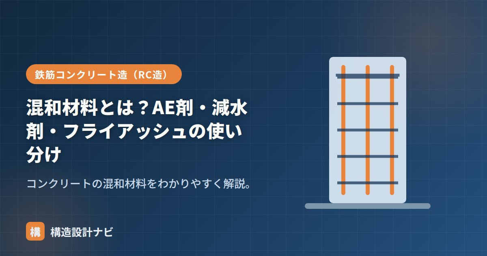

混和材料とは？AE剤・減水剤・フライアッシュの使い分け

混和材料とは、コンクリートの性質を改善するためにセメント・水・骨材以外に加える材料の総称です。英語では「admixture（混和剤）」「additive（混和材）」と呼ばれ、使用量によって混和剤（少量）と混和材（多量）に分かれます。ワーカビリティ（施工性）の改善から、強度・耐久性の向上まで、目的に応じてさまざまな種類が使い分けられています。
- 混和材料は使用量で混和剤（少量・配合計算の容積に算入しない）と混和材（多量・算入する）に分かれる
- 混和剤はAE剤・減水剤など施工性や水量低減が目的、混和材はフライアッシュ・高炉スラグなど強度・耐久性が目的
- 目的に応じて複数の混和材料を組み合わせて使うことが多い
混和剤と混和材の違い
| 混和剤 | 混和材 | |
|---|---|---|
| 使用量 | 少量（薬剤） | 多量 |
| 配合計算 | 容積に算入しない | 容積に算入する |
| 例 | AE剤・減水剤・AE減水剤・促進剤・遅延剤 | フライアッシュ・高炉スラグ微粉末・膨張材・シリカフューム |
混和剤は使用量が質量比でごくわずかなため、コンクリートの体積計算にはほとんど影響しません。一方、混和材は単位セメント量や骨材量に匹敵する量を使うこともあるため、配合設計上は絶対容積にきちんと算入して計算する必要があります。
主な混和剤の目的
- AE剤：微細な空気を連行し、ワーカビリティと凍結融解抵抗性を高める。
- 減水剤：セメントを分散させ、同じ軟らかさを少ない水で得る（強度・耐久性向上）。
- AE減水剤・高性能AE減水材：AE剤と減水剤の両方の効果。
- 促進剤・遅延剤：凝結・硬化を早める／遅らせる（硬化を早める方法も参照）。
主な混和材の目的
- フライアッシュ：ワーカビリティ向上・水和熱低減・長期強度。
- 高炉スラグ微粉末：長期強度・耐久性・アルカリ骨材反応抑制（詳しくは高炉セメント）。
- 膨張材：収縮を補償（無収縮）。
- シリカフューム：高強度・緻密化。
使用量の考え方
混和剤の添加量は、セメント質量に対して数%以下の微量で管理されるのが一般的です。少量でも性能への影響が大きいため、計量・混入の管理はシビアに行われます。対して混和材は、セメントの一部を置き換える形で使うことが多く、置換率（セメントに対する質量比）で管理します。いずれも使いすぎると凝結不良や強度低下など逆効果になる場合があるため、試験練りで適量を確認したうえで採用するのが基本です。
使い分け
「軟らかさ・施工性」を水を増やさず確保したい→AE剤・減水剤。「強度・耐久性・低発熱」を高めたい→フライアッシュ・高炉スラグなどの混和材。目的に応じて組み合わせます。
異なるメーカー・種類の混和剤を無計画に併用すると、化学反応で急結や分離を起こすことがあります。組み合わせる場合は、事前に試験練りで相性を確認することが大切です。
現場で混和剤の追加打合せがあると、私はまずメーカーが異なる薬剤の併用がないかを確認します。促進剤と減水剤を別メーカーで組み合わせて急結を起こした事例を聞いたことがあり、種類を増やすときは必ず試験練りの結果を提出させるようにしています。
目的別・混和材料の使い分け早見表
「何をしたいか」から逆に引けるよう、目的別に整理しました。
| 目的 | 使う混和材料 | 効果の仕組み |
|---|---|---|
| 水を減らして強度を上げたい | 減水剤・AE減水剤・高性能AE減水材 | セメント粒子を分散させ、少ない水で同じ流動性を得る |
| 凍結融解に強くしたい | AE剤 | 微細な空気泡が、凍結時の水の膨張を逃がすクッションになる |
| 水和熱を抑えたい | フライアッシュ・高炉スラグ微粉末 | セメントの一部を置き換え、発熱量そのものを減らす |
| 収縮を抑えたい | 膨張材 | 硬化時にわずかに膨張し、乾燥収縮を相殺する |
| 超高強度にしたい | シリカフューム | 超微粒子がセメント粒子の隙間を充填し組織を緻密にする |
| 硬化を早めたい／遅らせたい | 促進剤／遅延剤 | 水和反応の速度を化学的に調整する |
| アルカリ骨材反応を抑えたい | 高炉スラグ微粉末・フライアッシュ | コンクリート中のアルカリ量を実質的に減らす |
使用上の注意点
混和材料は少量で大きな効果を発揮する反面、扱いを誤ると逆効果になります。
| 注意点 | 内容 |
|---|---|
| 過剰添加は逆効果 | AE剤を入れすぎると空気量が過大になり強度が低下する（空気量1%増で強度は4〜6%低下するとされる）。減水剤の過剰は凝結遅延や 材料分離を招く |
| 組み合わせの相性 | 複数の混和剤を併用すると、想定外の凝結遅延や空気量変動が生じることがある。試験練りでの確認が必須 |
| 温度の影響 | 気温によって効果の出方が変わる。同じ添加量でも夏と冬でスランプや凝結時間が変わる |
| 計量の精度 | 混和剤は微量なので、計量誤差の影響が大きい。生コン工場での自動計量と管理記録の確認が重要 |
かつては「セメント・水・砂・砂利」の4材料だったコンクリートも、現在では混和材料の使用が標準です。とくにAE減水剤は、ほぼすべての生コンに使われています。高強度コンクリートや高流動コンクリートといった高性能な材料は、混和材料なしには成立しません。混和材料の進歩がコンクリート技術の進歩を支えてきたと言っても過言ではないのです。
よくある質問
Q1. 混和剤と混和材はどう区別すればよいですか？
使用量と配合計算での扱いで区別します。混和剤は薬剤として少量（セメント質量の数%以下）を用い、体積が小さいため配合設計で容積に算入しません。一方、混和材はセメントの一部を置き換えるほど多量に用いるため、絶対容積として配合計算に算入します。AE剤・減水剤が混和剤、フライアッシュ・高炉スラグ微粉末が混和材の代表例です。
Q2. AE剤を入れると強度が下がるのに、なぜ使うのですか？
空気量の増加による強度低下を上回るメリットがあるためです。AE剤が連行する微細な空気泡は、ワーカビリティを大幅に改善するため単位水量を減らすことができ、その分の強度向上が空気による低下を相殺します。加えて、凍結融解抵抗性が飛躍的に向上し、材料分離やブリーディングも抑えられます。総合的には品質が向上するため、現在ではほぼ標準的に使用されています。
Q3. フライアッシュを使うと初期強度が落ちますか？
落ちます。フライアッシュは、セメントの水和で生じた水酸化カルシウムと徐々に反応して強度に寄与する（ポゾラン反応）ため、初期の強度発現は普通コンクリートより遅くなります。一方、長期的には組織が緻密になり、強度・水密性・化学抵抗性が向上します。したがって、初期強度が必要な工程では使いにくく、マスコンクリートや水密性が求められる構造物に適しています。
まとめ
- 混和材料は混和剤（少量・容積に算入しない）と混和材（多量・算入する）に分かれる。
- 混和剤＝AE剤・減水剤など（施工性・水量低減）、混和材＝フライアッシュ等（強度・耐久・低発熱）。
- 使用量の管理方法も混和剤（添加率）と混和材（置換率）で異なる。
- 目的に応じて使い分け・組み合わせ、併用時は事前に相性を確認する。